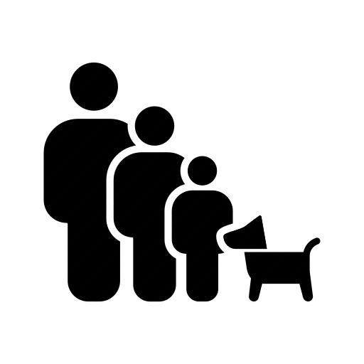
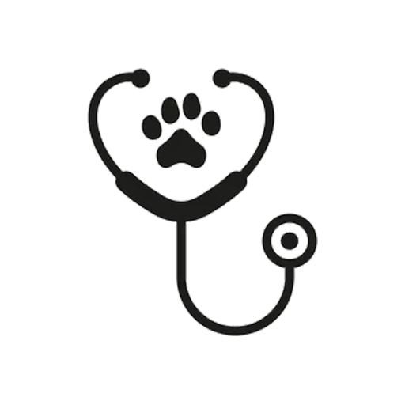
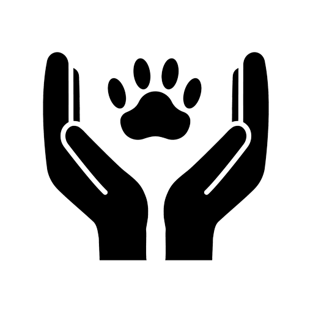

Nossa Historia
Iniciamos na Causa Animal em agosto de 2017, mas só em 2019 alugamos nosso primeiro lar temporário, até hoje a Causa Pet já contribuiu com a felicidade de 457 lares por meio da adoção, resgatou 723 animaizinhos que se encontravam em situação de risco e ao todo já foram beneficiados mais de 1.000 animais. Atualmente temos mais de 140 animais em nosso Lar Temporário, onde cuidamos e damos amor até que uma família os adote.
Familias Beneficiadas
457 Familias teve um novo membro fiel de 4 patas.
Resgate
Já foram mais de 700 animais resgatados.
Curados
Mais de 1000 animais recuperados de lesões.
Minha missão na CausaPet é conscientizar, cuidar e inserir animais em situação de risco e abandono em lares dispostos a adoção e ciosos da felicidade compartilhada com um pet.